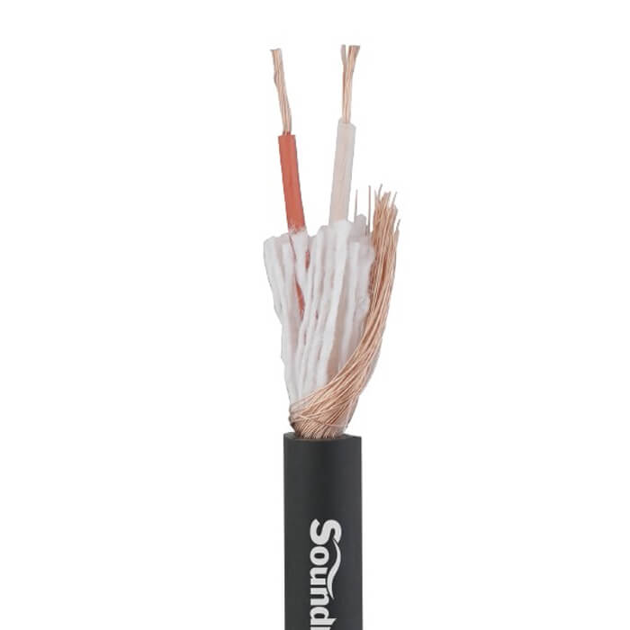

GA202는 99.9% OFC(Oxygen-Free Copper, 무산소동) 도체를 사용한 Soundking의 프로페셔널 100M 롤타입 마이크 케이블입니다. 0.12mm × 20심 × 2코어 트위스트 신호선과 99.9% OFC 64심 스파이럴 실드 + 부직포 래핑으로 구성되어, 90%의 높은 차폐율을 확보합니다. HDPE 절연체와 면사 필러로 내부 구조를 안정화하여 프로 음향 현장의 대규모 배선에 적합합니다.

99.9% OFC(무산소동) 도체 100M 롤타입 마이크 케이블. 이중 차폐 · 90% 차폐율 · 현장 재단 · 커넥터 조립용.
| 길이 | 소비자가 (VAT 포함) | 비고 |
|---|---|---|
| 100M (1롤) | 165,000원 | 커넥터 별도 |
Soundking GA202는 99.9% OFC(Oxygen-Free Copper, 무산소동) 도체를 사용한 프로페셔널 100M 롤타입 벌크 마이크 케이블입니다. OFC 도체는 산소 함유량을 극도로 낮춘 고순도 구리(99.9% 이상)로, CCAM·CCA 대비 전도성이 높고 산화에 강하여 장기간 안정적인 신호 품질을 유지합니다.
신호선은 0.12mm 두께 OFC 와이어 20심 × 2코어 트위스트 페어 구성이며, 차폐는 0.12mm 두께 OFC 와이어 64심 스파이럴 실드와 부직포(Non-woven fabric) 래핑을 결합한 구조로 90%의 높은 차폐율을 달성합니다. HDPE(고밀도 폴리에틸렌) 절연체를 사용하여 신호선 간 누화(Crosstalk)를 최소화하며, 면사(Cotton yarn) 필러로 내부 구조를 안정화했습니다.
Soundking GA202 100M 롤타입 마이크케이블 이미지입니다.

GA202 롤타입 마이크케이블의 핵심 포인트입니다.
음향 케이블에 사용되는 구리 도체의 종류별 특성과 가격대를 비교합니다. GA202는 99.9% OFC 도체를 사용합니다.
GA202의 상세 기술 사양입니다.
| 모델명 | GA202 |
|---|---|
| 케이블 타입 | 롤타입 마이크케이블 (OFC) · 커넥터 별도 |
| 브랜드 | Soundking |
| 도체 | 99.9% OFC (Oxygen-Free Copper, 무산소동) |
| 신호선 | 0.12mm × 20심 × 2코어 / 0.23mm² (≈24 AWG 상당) |
| 도체 연선 | 트위스트 페어 (피치 18±3mm) |
| 신호선 절연 | HDPE Φ1.4±0.1mm (Red / Natural Color) |
| 필러 | Cotton yarn (면사) 2×16/7S |
| 래핑 | Non-woven fabric (부직포) 0.05×12×20 |
| 실드 | 99.9% OFC 0.12mm × 64심 스파이럴 (피치 20±3mm) |
| 차폐율 | 90% |
| 외피 | PVC 탄성 소재 (Black) |
| 외경 (O.D.) | 6.0±0.2mm |
| 연결 방식 | Balanced (밸런스드 2코어) |
| 판매 단위 | 100M (1롤) |
| 커넥터 | 없음 (별도 조립 필요) |
| 사용 온도 | -20°C ~ 70°C |
| 도체 저항 | ≤ 93 Ω/km |
| 절연 저항 | ≥ 200 MΩ·km |
| 절연 내압 | AC 2000V (1분간 절연파괴 없음) |
| 스파크 내압 | 3000V |
Soundking GA202와 ADAM AD100MC의 상세 사양을 비교합니다. 동일한 O.D. 6mm, 100M 롤타입이지만 도체·실드·절연 구조에 차이가 있습니다.
GA202 롤타입 마이크케이블의 대표적인 활용 분야입니다.
GA202와 함께 비교하거나 사용할 수 있는 제품입니다.